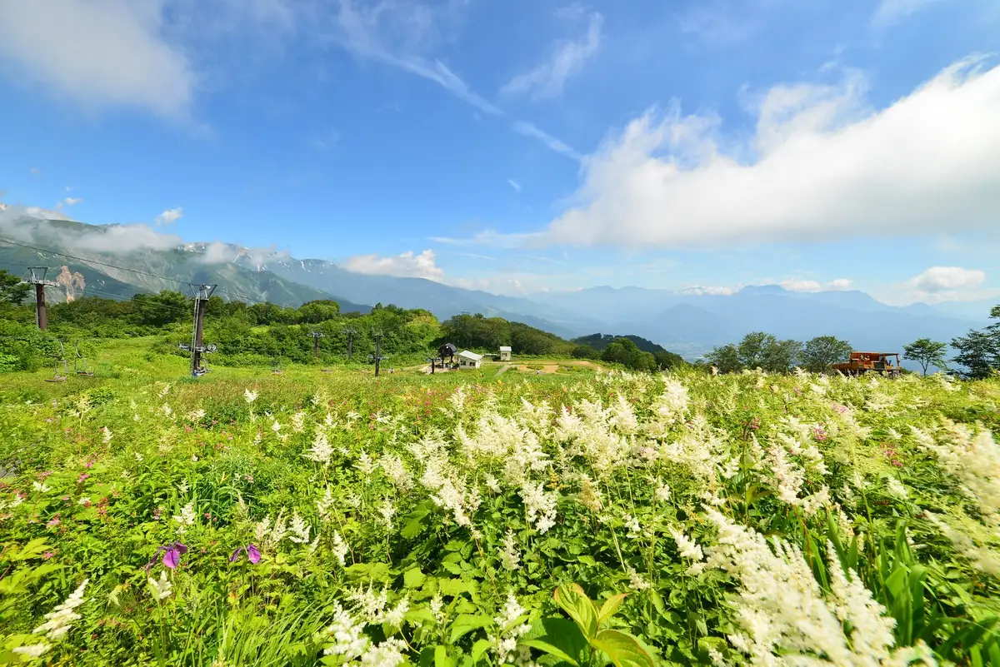
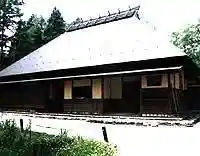
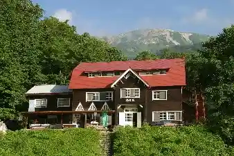
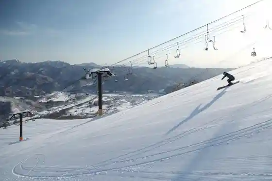

Hakuba
Hakuba · Nagano
Hakuba
Highlighted on the Nagano map.

Sights
Hakuba Goryu Kozan Botanical Garden
Hakuba Folk History Museum

Son'ei Sarukura So

HAKUBA VALLEY Hakuba Happone Ski Area

Ko Minka Kafe Kappa Tei
Den'en Shi
Denenshi, a one-party-per-day small hotel in Hakuba Meitetsu villa woods, with antique-furnished rooms in a mountain-lodge style.
White Resort Hakuba Sa no Saka
White Resort Hakuba Sanosaka ski area known for 100 percent natural snow and powder runs including the New Paradise course.
Eiburu Hakuba Goryu &Hakuba47
Hakuba Iwadake Su no Fiirudo
Hakuba Iwatake Snow Field on an independent 1,289 m peak in Hakuba Village, with gondola access and alpine ski terrain.
Sarukura